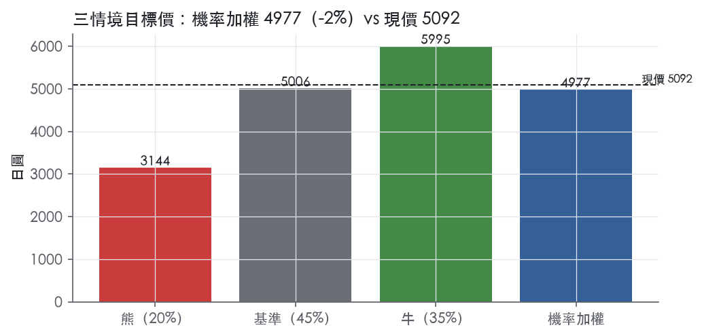
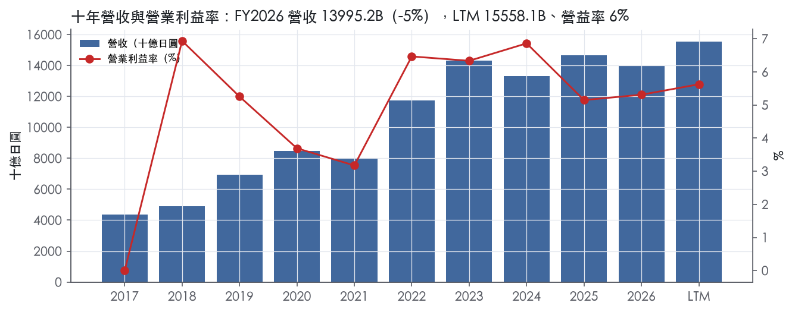
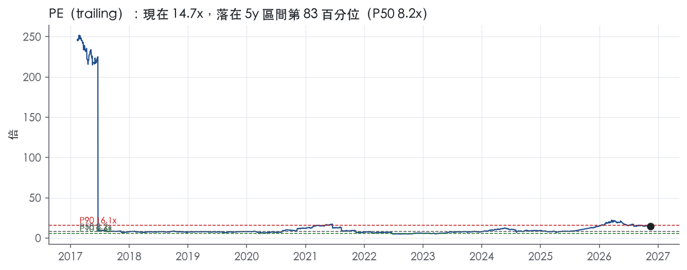
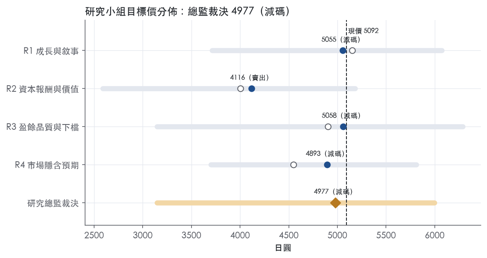
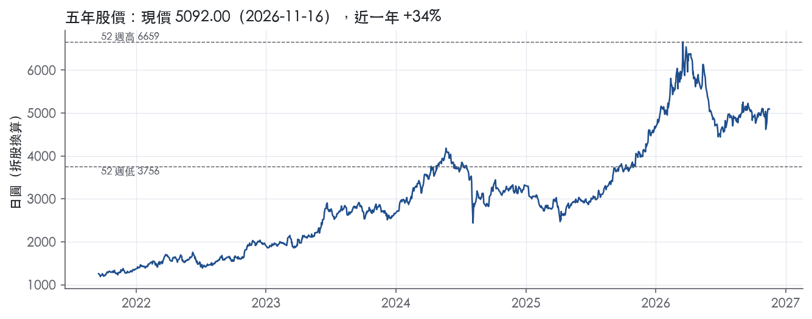

評等總表 › 未分類 › 8031.T
盈餘停在計畫水準、倍數持平，減碼｜評等 減碼｜目標價 4977
| 報告日 | 評等 | 目標價 | 當時股價 | 超額報酬 |
|---|---|---|---|---|
| 2026-11-16 | 減碼 | 4,977 | 5,092 | -7.5% |
| 評等 | 減碼（邊界，鄰近中立） |
| 12 個月目標價 | 4977 日圓 |
| 現價 | 5092.00 日圓（2026-11-16） |
| 預期報酬 | 股價 -2.3%＋股息 2.6%＝總報酬 +0.3%；日股門檻 7.8%，超額 -7.5% |
| 估值方法 | P/E 13.3x，套在第 5–8 季的EPS（也就是一年後的未來四季） |
| 三情境 | 熊 3144／基準 5006／牛 5995 |
| 研究流程 | 四位研究員兩輪辯論＋研究總監裁決 |
| 資料來源 | EDINET、TDnet、J-Quants、Yahoo、FRED（全免費） |
盈餘停在計畫水準、倍數持平，減碼（研究總監裁決，四位研究員兩輪辯論後）
評等 減碼（邊界，鄰近中立）｜12 個月目標價 4977 日圓（總監三情境機率加權 4980 與研究員中位數 4974 各半）｜現價 5092.00（2026-11-16）
預期報酬：股價 -2.3%＋股息 2.6%＝總報酬 +0.3%。日股門檻 7.8%，超額 -7.5%，離中立的分界不到三個百分點，屬邊界評等（落在其他級距的機率約三成）。
估值方法：P/E 13.3x，套在第 5–8 季的EPS（也就是一年後的未來四季）。三情境：熊 3144（20%）／基準 5006（45%）／牛 5995（35%）。
什麼會讓研究總監改變看法：2027-02第三季短信下修全年計畫或FY2028期初予想低於1,000.0B，代表時差油價退潮沒被本業接住，基準營益率降到5.3%並加深偏空；反之FY2028期初予想在JCC≤85、匯率≤150前提下≥1,100.0B，Q5–Q8盈餘上修到中計軌道並轉中性。
| 過去四季（實際，FY2027Q2） | 未來四季 | 第 5–8 季 | 第 9–12 季 | |
|---|---|---|---|---|
| 營收（B） | 15,558.1B | 16,180.5B | 16,342.3B | 16,832.5B |
| 營收成長 | 10.4% | 4.0% | 1.0% | 3.0% |
| 營業利益率 | 5.6% | 5.7% | 5.7% | 5.8% |
| EPS（日圓） | 346.27 | 368.42 | 376.39 | 394.90 |
| EPS 成長 | 9.8% | 6.4% | 2.2% | 4.9% |
| 每股股息（日圓） | — | 0.00 | 0.00 | 0.00 |
| P/E（現價） | 14.7x | 13.8x | 13.5x | 12.9x |
| 股息殖利率（現價） | 2.6% | — | — | — |
過去四季為申報數字；預測為研究總監的假設、程式計算。倍數與殖利率都用現價計算，用來看現價對應各期獲利的高低。
| 情境 | 機率（歷史） | 故事 | 未來四季營收成長 | 第 5–8 季營益率 | 倍數 | 目標價 | 股價漲跌 |
|---|---|---|---|---|---|---|---|
| 熊 | 20%（17%） | 風險表第1條（鐵礦石每1日圓/噸3.0B、原油每1日圓/桶1.3B）疊第2條（匯率每1日圓4.6B）：中國減速壓鐵礦石、WTI 72、日圓145，銷管費黏性去槓桿，EPS回FY2026的290.86水準，新買回縮小，倍數回3y P50 10.3x附近；俄羅斯減損列模型外尾端 | -2.0% | 4.5% | 11.0x | 3144 | -38.3% |
| 基準 | 45%（47%） | WTI 88、日圓153：FY2027小幅超計畫後，Q5–Q8時差油價與日圓順風退潮、一次性回130.0B常態，被持分法與基礎營業現金流動能接住，盈餘停在計畫1,050.0B水準，倍數持平 | 4.0% | 5.7% | 13.3x | 5006 | -1.7% |
| 牛 | 35%（36%） | WTI 95、日圓160（本行下行路徑對三井有利）：FY2027大幅超計畫、資產循環益維持170.0B，2027-05 FY2028期初予想≥1,100.0B並公布新買回，市場多付約一倍；R3原15x改為維持+1x間距 | 7.0% | 6.3% | 14.3x | 5995 | 17.7% |
目標價由程式依研究總監的驅動與倍數計算；機率由研究總監給定。括號內是歷史頻率：把這檔股票過去十年 12 個月報酬的波動形狀，置中在基準情境，結果落在各情境附近的比例。

四位研究員用不同方法各自估值，回應研究總監的質疑後交出第二輪，最後由總監逐點裁決。各研究員的主張見第七章，裁決理由見第八章，完整論證見《研究底稿》。
| 立場（一輪→二輪） | 加權目標價（一輪→二輪） | 評等（一輪→二輪） | 第二輪倍數 | 熊～牛目標價 | |
|---|---|---|---|---|---|
| R1 成長與敘事 | 中性→中性 | 5151→5055 | 中立→減碼 | 14.3x | 3712～6071 |
| R2 資本報酬與價值 | 看空→看空 | 4004→4116 | 賣出→賣出 | 11.5x | 2590～5180 |
| R3 盈餘品質與下檔 | 中性→看空 | 4905→5058 | 減碼→減碼 | 14.0x | 3144～6289 |
| R4 市場隱含預期 | 看空→看空 | 4549→4893 | 賣出→減碼 | 13.3x | 3700～5812 |
| 研究總監裁決 | 看空 | 4977 | 減碼 | 13.3x | 3144～5995 |
目標價由程式依各自的驅動與倍數計算；評等＝機率加權總報酬 − 日股門檻。
三井物產是日本五大綜合商社之一，以貿易仲介、股權投資、融資與營運管理四種手法，在金屬資源、能源、機械基建、化學品、鋼鐵製品、生活產業、次世代機能推進七大事業領域創造價值。「當公司及合併子公司在金屬資源、能源、機械基建、化學品、鋼鐵製品、生活產業、次世代機能推進等各領域，以綜合商社為核心，活用全球展開的事業據點及其資訊力，多元化從事多種商品的買賣、製造、運輸、融資等各種事業」。公司並「展開資源基建開發計畫建構，以及與環境、新技術、次世代燃料、健康相關的事業投資，和運用數位創造價值等廣泛取組」。公司合併決算對象公司共446家，其中合併子公司海外206家、國內72家，權益法適用公司海外136家、國內32家。客戶橫跨資源生產國政府、全球能源與原物料買家、汽車與機械製造商，一路延伸到終端零售、醫療與餐飲服務消費者，是典型B2B為主、兼營B2C通路的商社模式。
三井物產七大分部在FY2027（2026年4月1日起）進行了重新命名，機械・インフラ更名為モビリティ・デジタル・インフラ、生活產業更名為ウェルネスエコシステム、次世代・機能推進更名為イノベーション&コーポレートディベロップメント。金屬資源分部經營鐵礦石、原料炭、銅、鎳、鋁、合金鐵與金屬回收，主要子公司包括三井物產Metals、Mitsui Iron Ore Development等。能源分部涵蓋天然氣・LNG、原油、石油製品與環境次世代能源，主要關係企業包括三井能源資源開發、Mitsui E&P系列。モビリティ・デジタル・インフラ分部經營電力、海洋能源、瓦斯配銷、水務、物流社會基建、汽車、建設礦山機械、鐵路、船舶與航空。化學品分部經營石化原料製品、無機原料、合成樹脂、農業資材、飼料添加物與化學品儲槽碼頭。鋼鐵製品分部經營基建用鋼材、汽車零件、能源用鋼材。ウェルネスエコシステム（原生活產業）分部涵蓋食品、時尚、健康照護與員工體驗（EX）。イノベーション&コーポレートディベロップメント分部涵蓋資產管理、資本解決方案、保險、併購與創投投資、商品衍生品、物流中心、ICT服務與不動產等。有報未按營收比重揭露各分部規模，僅揭露當期利益與基礎營業現金流金額。FY2027期初業績預測（5月公布）各分部歸屬母公司當期利益為：金屬資源250.0B日圓、鋼鐵製品20.0B日圓、能源200.0B日圓、モビリティ・デジタル・インフラ240.0B日圓、化學品75.0B日圓、ウェルネスエコシステム55.0B日圓、イノベーション&コーポレートディベロップメント70.0B日圓，合計920.0B日圓。FY2026財年整體合併營益率5.3%，較FY2025的5.2%略有改善，顯示去年度分部獲利結構相對穩定。
三井物產的客戶結構以全球資源能源買家、產業製造商與基建開發業主為核心，再向下延伸到食品與零售終端消費者，通路分三層：貿易仲介、股權投資、營運管理。公司合併關係企業中，海外子公司加權益法公司合計342家，顯著多於國內104家，反映海外布局深度【判，依有報 FY2026 事業の内容數字加總】。從大股東結構看，日本マスタートラスト信託銀行（信託口）持股16.12%為最大股東，STATE STREET BANK AND TRUST COMPANY 505104帳戶持股10.42%，日本カストディ銀行（信託口）持股6.27%，日本生命保險持股2.46%。依大量保有報告書，National Indemnity Company（Berkshire Hathaway Inc.的全資子公司）2025年3月10日申報持股已達9.82%，公司確認其為主要股東。三井住友信託銀行同期也申報持股5.56%。政策保有股（交叉持股）前三大標的為三井海洋開發，帳面149.08B日圓，理由是浮體式海洋石油天然氣生產設備長期租船合作夥伴關係；セブン&アイ・ホールディングス帳面103.345B日圓，理由是原材料與包材一元化管理及共同配送中心物流功能提供；大和工業帳面54.921B日圓，理由是全球電爐策略最重要夥伴，並參股其泰國子公司Siam Yamato Steel 20%。非上市政策保有股合計帳面851.41B日圓，非上市以外（上市）政策保有股合計帳面606.509B日圓，兩者加總後規模不小，是東證要求處分交叉持股的重點觀察項目【判，依有報 FY2026 股式の保有状況數字加總】。
FY2026Q3（截至2025年12月）營收3,597.15B日圓，年減1.5%；FY2026Q4（截至2026年3月）營收3,638.95B日圓，年減1.1%，淨利222.02B日圓。FY2027Q1（截至2026年6月）營收急升至4,347.56B日圓，年增31.7%，淨利294.05B日圓，EPS 103.65日圓。FY2027Q2（截至2026年9月）營收3,974.46B日圓，年增14.9%，淨利280.81B日圓，EPS 99.05日圓。對應決算短信揭露的上半期（FY2027Q1+Q2）累計數字顯示，收益8,322.0B日圓，較去年同期6,759.1B日圓增加，主因化學品、金屬資源、能源分部貢獻。毛利737.6B日圓，較去年同期618.7B日圓增加，主因化學品、能源、モビリティ・デジタル・インフラ上升。中間淨利（歸屬母公司）574.9B日圓，較去年同期423.7B日圓大增。分部表現上，モビリティ・デジタル・インフラ分部中間淨利153.7B日圓，較去年同期增加51.0B日圓，主因巴西旅客鐵路事業子公司去合併化相關損益、美洲汽車事業銷售租賃及瓦斯配銷事業表現良好。金屬資源分部中間淨利139.7B日圓，較去年同期增加25.4B日圓，主因銅事業價格上漲與鐵礦石事業營運效率提升降低成本。化學品分部中間淨利70.2B日圓，較去年同期增加26.7B日圓，來自貿易業務價量齊揚、美國甲醇事業價格上升及Nutrinova子公司化相關損益。能源分部中間淨利103.3B日圓，僅較去年同期增加1.1B日圓，因LNG交易去年同期高基期反動抵銷了石油交易與石油天然氣生產事業價格上漲的貢獻。鋼鐵製品分部中間淨利10.5B日圓，較去年同期微減。基礎營業現金流上半期511.6B日圓，較去年同期增加63.1B日圓。但自由現金流上半期僅23.4B日圓，遠低於去年同期187.6B日圓，主因投資活動現金流出擴大及營運資金（主要是應收帳款增加）吃掉營業現金流入。淨有息負債升至4,242.0B日圓，較FY2026期末4,139.0B日圓增加103.0B日圓，淨負債權益比維持0.47倍。公司對下半期的匯率假設為日圓兌日圓155.00，原油價格（JCC）110日圓/桶，期後落差調整後反映於合併損益之油價假設為116日圓/桶。公司已將FY2027全年業績預測上修，歸屬母公司淨利由期初公布（5月）的920.0B日圓上修至1,050.0B日圓，增幅14.1%，基礎營業現金流預測同步由1,050.0B日圓上修至1,120.0B日圓。
三井物產把成長引擎說成「進化した攻め筋」三支箭：Industrial Business Solutions 2.0、Global Energy Transformation 2.0、Wellness Ecosystem Creation 2.0。「中期経営計画2029では、差別化された競争力、変革を続ける収益基盤、強い個による価値創造を、Corporate Strategyとして新たに設定しました」。公司目標在2029年3月期達成史上最高水準的基礎營業現金流1,200.0B日圓、歸屬母公司淨利1,100.0B日圓、ROE 12%，並以2030年「あり方」設定歸屬母公司淨利超過1,400.0B日圓、ROE超過13%為更長期願景。股東回饋政策上，公司承諾維持或增配的「累進配當」，下限年配息提高到每股140日圓，較前期增加25日圓，中期經營計畫2029三年累計股東還元（股息加庫藏股）佔基礎營業現金流比重設定在50%水準。公司並已公布最高200.0B日圓的庫藏股買回計畫，執行期間為2026年8月5日至2027年1月29日，取得股份將全數銷毀。三井物產是一家靠資產循環（Asset Recycling）與事業投資組合持續汰弱留強驅動獲利成長的商社，獲利對原物料價格與日圓匯率的敏感度高，上半期自由現金流大幅低於淨利即是明顯例證。在東證要求改善資本成本與股價（PBR）的壓力下，公司加碼股東還元與庫藏股銷毀，同時政策保有股規模仍逾1,400.0B日圓，未來處分進度將是股東回報能否進一步提升的關鍵變數。考量公司FY2027財年已二度上修全年獲利預測，且基礎營業現金流結構穩健，中期經營計畫2029所設定的獲利與ROE目標短期內並非不可及。

三井物產在合併層級沒有經濟護城河。個別資產有局部優勢，但被商品價格循環和資本密集度稀釋；量化底稿顯示，ROIC 有資料的 8 年中沒有一年高於資本成本。趨勢判為穩定：Rhodes Ridge 等大型投資可能改善資產品質，但同時壓低自由現金流，未來 3–5 年看不出 ROIC 結構性上移的證據。
成本優勢是最強的一類，集中在上游鐵礦權益。公司稱已取得「擁有世界最大級未開發鐵礦礦床的澳洲 Rhodes Ridge 鐵礦事業權益」。FY2026 投入 Rhodes Ridge 鐵礦事業的支出為 723.8B 日圓。上半期金屬資源增益的一部分，來自鐵礦事業營運效率提升帶來的成本下降。不過成本優勢只決定公司在成本曲線上的位置，不決定礦價本身，所以無法轉成跨循環的超額報酬。
效率規模存在於區域型基礎設施。旗下子公司包括經營東京國際機場國際線貨物航站的東京国際エアカーゴターミナル、經營美國化學品與石油製品儲槽碼頭的 Intercontinental Terminals Company，以及比利時的化學品儲槽碼頭 ITC ANTWERP。另有泰國上水供給投資與巴西瓦斯配給投資。這類資產在當地市場容量有限，新進者難以進入，但占全公司資本的比重不足以拉動合併 ROIC。
轉換成本出現在深度嵌入客戶營運的合作關係。公司與三井海洋開發有「浮體式海洋石油・天然氣生產設備長期租船事業等協業關係」。公司為セブン＆アイ提供「以需給管理為首的原材料・包材一元化管理功能、共配中心營運等物流功能」。
無形資產限於製造商授權的經銷權。例子包括 Toyota Chile 的汽車及零件進口銷售、KOMEK MACHINERY Kazakhstan 的 Komatsu 產品銷售，以及マックスマーラジャパン的 Max Mara 產品國內銷售。經銷權的主導權在品牌方手上，續約時議價力有限。
網路效應沒有證據，不列。
看不到，數字直接否定寬或窄護城河的主張。ROIC 十年平均 6.0%、標準差 2.1%、最低 3.2%、最高 9.1%，最新 5.2%。資本成本代理值 10.1%，ROIC 平均減資本成本為 -4.1%，8 年中高於資本成本 0 年。
這組比較有兩處口徑偏差，必須照實寫出：
為了校正第二項偏差，改看 ROE：十年平均 12.5%、標準差 3.7%、區間 8.0% 至 18.9%。ROE 的區間寬度顯示報酬隨商品循環擺盪，不是穩定的超額報酬。
利潤率的波動看似小，但要分開解讀。營業利益率十年平均 5.5%、標準差 1.3%，毛利率十年平均 10.7%、標準差 2.1%。標準差小，反映的是貿易轉手的低毛利結構，不是定價權。營收成長標準差 18.7%，說明營收由商品價格驅動。
綜合來看，即使兩項偏差都朝有利公司的方向修正，也只能把評級的不確定性推向「窄」的邊緣，沒有足夠把握上調，所以維持「無」。
最大的侵蝕力量是商品價格與匯率，這兩者公司都無法控制。公司揭露的當期利益敏感度如下：
公司自己也把「中國經濟減速對資源需求的影響」列為金屬資源的風險。
第二個侵蝕力量是資本密集度上升。中期經營計畫 2026 期間執行了約 2,400B 日圓的成長投資。FY2026 資本支出占營收比率為 7.9%，自由現金流為 -155.49B 日圓，淨負債升至 3,588.15B 日圓（資料包年度表 FY2026）。大型礦案若遇到礦價下行，分母擴大會進一步壓低 ROIC。
第三個風險是能源轉型的時間軸，公司寫明「Energy Transformation 進度的時間軸具流動性」。
目標倍數相對同業應該持平，不給護城河溢價，因為綜合商社的報酬結構相近，三井物產沒有能長期維持超額 ROIC 的獨有優勢。目前 P/E 14.7x，已位於自身 5 年分位 82.9%，5 年中位數為 8.2x；在沒有護城河支撐的情況下，不宜假設倍數長期停在高檔。若要給高於歷史中位數的倍數，理由應該是累進配息與庫藏股帶來的資本回報改善，而不是競爭優勢。
| 指標 | 最新 | 十年平均 | 標準差 | 最低 | 最高 |
|---|---|---|---|---|---|
| ROIC | 5.2% | 6.0% | 2.1% | 3.2% | 9.1% |
| 毛利率 | 9.5% | 10.7% | 2.1% | 8.8% | 16.2% |
| 營業利益率 | 5.3% | 5.5% | 1.3% | 3.2% | 6.9% |
| FCF 利潤率 | -1.1% | 4.2% | 2.6% | -1.1% | 7.8% |
| ROE | 10.2% | 12.5% | 3.7% | 8.0% | 18.9% |
程式計算。資本成本代理值（10 年債＋5%）：10.1%；ROIC 平均減資本成本：-4.1%；ROIC 有資料的 8 年中，高於資本成本 0 年。
營業現金流／淨利 LTM 0.76x 為紅燈，但近三年平均 1.03x、十年平均 1.22x 均達標，顯示落後是短期現象而非結構性惡化。自由現金流／淨利 LTM -0.45x 亦為紅燈，主因 FY2026 資本支出占營收比重跳升至 7.9%，遠高於 FY2025 的 2.4%，對應豪州鐵礦石 Rhodes Ridge 事業有形固定資產增加 857.1B 日圓與石油・瓦斯生產事業投資增加 100.8B 日圓。公司全年基礎營業現金流為 978.9B 日圓，加計資產循環回收 343.0B 日圓後現金流入合計 1,322.0B 日圓，本業創現能力並未惡化，但投融資 1,380.0B 日圓加上股東還元 530.0B 日圓，導致股東還元後現金流為赤字 588.0B 日圓，這是資本配置選擇而非盈餘灌水。應計比率 LTM 1.2% 為黃燈但貼近 0%，不構成實質紅旗。上半期（FY2027H1）營業活動現金流為 223.4B 日圓，較去年同期 428.7B 日圓明顯下降，公司說明主因運轉資本增加（主要是銷項應收帳款增加），基礎營業現金流本身仍由 448.5B 日圓增至 511.6B 日圓，顯示本業現金創造力持續改善，差異來自營運資本時點而非盈餘品質。
上半期有價證券損益由去年同期 27.5B 日圓大增至 118.6B 日圓，主要來自美國不動產所有・運營事業（CIM Group）剩餘持分公允價值評估益與巴西旅客鐵路事業子公司社外化相關損益，部分抵銷去年同期宇宙事業（Firefly Aerospace）IPO 公允價值評估益的反轉，這類公允價值利得屬一次性、非經常性，估值不應視為核心盈餘。雜損益由去年同期 -5.1B 日圓轉為 -5.5B 日圓，主因 CIM Group 買權評估損，部分由海外能源一次性利得抵銷，金額小、對整體盈餘影響有限。固定資產處分損益由 10.2B 日圓降至 2.4B 日圓，無重大一次性項目需特別剔除。全年層面（有報 FY2026），非金融資產減損損失為 7.9B 日圓（前期 34.9B 日圓），持分法適用會社投資減損損失為 22.2B 日圓（前期 24.2B 日圓），規模不大但屬真實資產減值，不應加回估值。這些非 GAAP 性質調整項（公允價值評估損益、資產循環損益）波動大但多屬一次性，核心的毛利與基礎營業現金流趨勢才是判斷盈餘品質的主軸。
淨DER（淨有息負債／股東權益）由 FY2026/3末的 0.44 倍上升至 0.47 倍，FY2027 上半期維持 0.47 倍。FY2026/3末有息負債合計 5,122.9B 日圓，其中 420.0B 日圓為劣後特約付シンジケートローン，格付機構將其中 50%（即 210.0B 日圓）視為資本同等品，有效緩和槓桿對信評的衝擊。公司維持 R&I AA（安定的）、Moody's A3（安定的）、S&P A（安定的）三家評等皆為穩定展望，且主要融資契約不含財務制限條款。股東權益（親會社持分）由 FY2026/3末 8,767.7B 日圓增至 FY2027H1 末 8,990.5B 日圓。資本配置上，公司於 2026 年 8 月公布最高 200.0B 日圓的庫藏股買回計畫（執行期間 2026/8/5–2027/1/29），且全數取得股份將予以消却，截至 2026/9/30 已買回 42.1B 日圓。全年配息計畫為每股 140 日圓（較前期增加 25 日圓），中間配息 70 日圓、期末配息 70 日圓，中期經營計畫 2029 承諾三年累計基礎營業現金流 50% 超用於股東還元。
① 營業現金流／淨利紅燈（LTM 0.76x）：主因下半期運轉資本增加，公司明確說明係銷項應收帳款等運轉資本增加所致，三年平均 1.03x、十年平均 1.22x 均達標，判定為短期假警報，非結構性盈餘品質惡化。
② 自由現金流／淨利紅燈（LTM -0.45x）：資本支出占營收比重大增至 7.9%，來自大型資源成長投資（Rhodes Ridge 鐵礦石事業 857.1B 日圓、石油・瓦斯生產事業 100.8B 日圓），屬一次性資本週期而非經常性現金流失真，基礎營業現金流本身達 978.9B 日圓顯示本業創現力仍穩健，判定為可解釋的一次性紅旗。
③ 淨負債／EBITDA（2.99x）與利息保障倍數（4.32x）黃燈：槓桿上升對應舉債增加支應資源投資，FY2026 全年末有息負債達 5,122.9B 日圓，但其中 420.0B 日圓為劣後債、50% 被評等機構視為資本，且三大評等機構皆維持穩定展望、無財務制限條款，判定為受評等與債務結構緩和的可控黃燈。
④ （股利＋回購）／淨利黃燈（33.3%）：低於 50% 綠燈門檻，但公司股東還元政策以基礎營業現金流（非淨利）為基準，且明確承諾中期經營計畫 2029 三年累計 50% 超基礎營業現金流用於股東還元，加上庫藏股買回計畫 200.0B 日圓與增配 25 日圓/股，判定此黃燈反映口徑差異而非股東回饋不足。
估值應以基礎營業現金流與持分法投資損益為核心盈餘基準，GAAP 當期利益中的公允價值評估利得（CIM Group、Firefly Aerospace 類）應予剔除或打折，因其波動大且非經常性。LTM 現金轉換紅燈與資本支出侵蝕 FCF 屬資源業資本週期，不建議對盈餘倍數做額外大幅折價，但資本支出高峰期間 FCF 殖利率（-3.0%，trailing）應視為暫時現象而非估值錨點。槓桿（淨負債/EBITDA 2.99x）處於黃燈上緣，加上劣後債緩和效果與穩定評等展望，暫不構成限制估值倍數的理由，但若 FY2027 資本支出未如期降溫，應重新檢視槓桿對 P/E、EV/EBITDA 的壓抑空間。
| 項目 | LTM | 近三年 | 十年 | 燈號 | 規則 |
|---|---|---|---|---|---|
| 營業現金流／淨利 | 0.76x | 1.03x | 1.22x | 紅 | ≥1.00x 綠、<0.80x 紅 |
| 自由現金流／淨利 | -0.45x | 0.36x | 0.66x | 紅 | ≥0.90x 綠、<0.60x 紅 |
| 應計比率（(淨利−CFO)／平均總資產） | 1.2% | -0.0% | -0.5% | 黃 | ≤0.0% 綠、>5.0% 紅 |
| SBC／營收 | — | — | — | — | ≤3.0% 綠、>8.0% 紅 |
| 淨負債／EBITDA | 2.99x | 2.81x | 2.99x | 黃 | ≤1.50x 綠、>3.00x 紅 |
| 利息保障倍數（營業利益／利息） | 4.32x | 4.34x | 6.12x | 黃 | ≥8.00x 綠、<3.00x 紅 |
| 稀釋股數年變動 | -0.0% | -2.9% | -2.4% | 綠 | ≤0.0% 綠、>3.0% 紅 |
| （股利＋回購）／淨利 | 33.3% | 29.8% | 28.7% | 黃 | ≥50.0% 綠、<0.0% 紅 |
程式計算；燈號以 LTM（無則近三年平均）判定。
| 風險 | 觸發指標（看什麼數字、在哪裡看） | 對 EPS 的影響方向與粗略幅度 | 未來 12 個月發生機率（高／中／低） | 出處 |
|---|---|---|---|---|
| 商品價格風險（鐵礦石、原油、銅、天然氣・LNG） | 原油、鐵礦石現貨價走勢；決算短信每季分部獲利揭露 | 負向，公司揭露FY2027原油US$1/桶變動影響當期淨利1.3B日圓，鐵礦石US$1/噸變動影響3.0B日圓（皆不含避險） | 高 | |
| 匯率風險（日圓兌日圓、澳幣兌日圓） | USDJPY（現157水準）、決算短信公布的全年假設匯率155.00 | 負向，公司揭露FY2027日圓兌日圓每變動1日圓影響當期淨利4.6B日圓，澳幣兌日圓每變動1日圓影響1.8B日圓 | 中 | |
| 事業投資回收不能風險（合資/權益法/非營運者權益） | 各分部「資產入替」公告、減損或資產出售案 | 負向，方向明確、幅度為大，但原文未附金額 | 中 | |
| 與信風險（流動應收帳款等回收不能） | 損失評價引當金餘額、應收帳款餘額（決算短信資產負債表） | 負向，公司揭露FY2026期末損失評價引當金控除後流動應收帳款等2,344.5B日圓，占總資產11.3%，控除之引當金餘額17.1B日圓 | 中 | |
| 保有上市股票股價風險（FVTOCI交叉持股） | TOPIX走勢、政策保有股處分公告 | 負向，影響其他綜合損益而非當期淨利，方向為中，公司揭露FY2026期末FVTOCI市場性資本性金融資產1,479.3B日圓，占總資產7.1% | 低 |
商品價格風險排第一，因為公司自己量化了敏感度且金屬資源、能源兩個分部合計占FY2027上半期分部淨利比重最高。原文寫道：「2027年3月期において、連結損益計算書における当期利益（親会社の所有者に帰属）への影響額は、原油價格でUS$1/バレルあたりの價格變動により13億円、鐵礦石でUS$1/トンあたりの價格變動により30億円と推定しています（いずれもヘッジによる影響額を除く）」。這代表若原油或鐵礦石價格出現雙位數日圓的下跌，疊加後對淨利的影響會相當可觀。觸發指標很明確：看布蘭特/WTI與鐵礦石現貨價每日走勢，以及公司每季決算短信中金屬資源、能源分部淨利的揭露。
匯率風險排第二，因為日圓貶值對出口與海外資產估值有正負雙向作用，但公司財報計畫假設（日圓兌日圓155.00）已經落後現行市場匯率（usdjpy 158.23，px快照）。原文揭露：「2027年3月期において、連結損益計算書における当期利益（親会社の所有者に帰属）への影響額は、米ドル/円で1円の變動により46億円、豪ドル/円で1円の變動により18億円と推定しています」。若日圓大幅升值（例如回到150以下），對當期淨利將造成逆風。觸發指標是usdjpy現貨匯率與每季決算短信中揭露的假設匯率差距。
事業投資回收不能風險排第三，因為公司明確承認「投下資金が回收不能となるリスク、撤退時に損失が發生するリスク、及び計畫した利益が得られないリスク」，且公司在金屬資源與石油・ガス探鉱・開発・生産事業中部分以「ノンオペレーター」身分參與，意味「開発及び生産に係る意思決定を含めた事業の運営はオペレーターの方針に依拠する」。這代表公司對部分核心資產的營運決策缺乏控制力。觸發指標是公司每年一次的「資產入替」揭露與個別專案減損公告，例如本期決算短信中已揭露澤巴西旅客鐵路事業子公司去合併化相關損益等一次性項目。
與信風險排第四，因為公司商業模式高度依賴延期付款與融資保證，FY2026期末控除引當金後的流動應收帳款等已達2,344.5B日圓，占總資產11.3%。原文承認：「與信先の財政狀態惡化により發生しうるリスクを完全に排除することはできません」。觸發指標是每期決算短信資產負債表中損失評價引當金餘額的年增率，若引當金大幅跳升代表客戶信用狀況惡化。
保有上市股票股價風險排第五，因為其影響主要落在其他綜合損益而非當期損益，對EPS的直接衝擊相對有限，但在東證要求降低交叉持股的政策壓力下仍需監測。原文揭露FY2026期末FVTOCI資本性金融資產1,479.3B日圓，占總資產7.1%。業務概況章補充政策保有股前三大標的（三井海洋開發、セブン&アイ、大和工業）帳面合計逾300B日圓。觸發指標是TOPIX年度表現與公司每年股式保有狀況揭露中政策保有股處分進度。
自由現金流持續為負、資本支出占營收比重跳升的流動性壓力。FY2026全年FCF為-155.49B日圓（量化底稿 FY2026），LTM FCF更惡化至-442.11B日圓，FY2027上半期FCF僅23.4B日圓，遠低於去年同期187.6B日圓，主因投資活動現金流出擴大及應收帳款增加吃掉營業現金流入。同時淨有息負債已升至4,242.0B日圓（決算短信口徑；px快照口徑為淨負債3,613.59B日圓），若商品價格或匯率同時轉弱，資本支出與股東還元（累進配息加200.0B日圓庫藏股計畫）之間的資金配置將面臨更大壓力。觸發指標：每季決算短信中基礎營業現金流 vs. 實際FCF的缺口，以及淨DER（目前0.47倍）的變化方向。
利率上升風險對資金成本與退休金資產的二階影響。公司自己在「一般性風險」清單中列出金利風險與確定給付費用風險，但未納入五大重要風險、也未量化敏感度。在目前美國十年期公債收益率5.1%、日本十年期公債收益率2.841%的環境下（mac快照），若利率進一步上升，公司長期資金再融資成本與退休金制度資產價值可能同步惡化，但因缺乏公司自揭數字，僅能方向性監測。觸發指標：公司每期決算短信揭露的平均融資成本與退休金制度資產評價，以及jgb10y、ust10y走勢。
現價 5092.00 對應 trailing（過去四季）P/E 14.7x、EV/EBITDA 15.0x、EV/EBITA —、EV/Sales 1.2x、FCF 殖利率 -3.0%。主要估值倍數 P/E 現在 14.7x，落在5 年區間第 83 百分位（P10／P50／P90 = 5.6x／8.2x／16.1x）。

把程式的機械基準預測放到現價下，市場付的前瞻倍數是：P/E（未來四季） 13.3x、P/E（第 5–8 季） 12.4x。反推 DCF 顯示市價隱含未來五年營收年成長 150.0%（WACC 9.0%、終值成長 3.0%、FCF 利潤率 -0.9%，SBC 不加回）。
| 倍數 | 現在 | 5 年 P10 | 5 年 P50 | 5 年 P90 | 現在分位 | 全期 P50 |
|---|---|---|---|---|---|---|
| P/E | 14.7x | 5.6x | 8.2x | 16.1x | 82.9% | 8.0x |
| EV/EBITDA | 14.9x | — | — | — | — | 9.6x |
| EV/EBITA | 23.7x | — | — | — | — | 14.5x |
| EV/EBIT | 20.6x | 9.4x | 12.5x | 23.0x | 88.0% | 14.2x |
| EV/Sales | 1.2x | 0.6x | 0.8x | 1.2x | 88.9% | 0.8x |
| P/S | 0.9x | 0.4x | 0.7x | 1.0x | 84.3% | 0.6x |
| P/FCF | 46.1x | 7.8x | 11.9x | 23.5x | 97.4% | 11.5x |
trailing 倍數（股價 ÷ 過去四季）；分位以每個交易日計算。
（日股同業籃尚未建置：評等門檻用日股絕對門檻＝日本 10 年公債＋股權風險溢酬 5%，見首頁。）
事後實現前瞻倍數帶（P/E，2018-11-21..2025-11-19）：P10／P50／P90 = 4.0x／6.0x／10.8x。它是每個交易日的股價除以之後四季實際實現的指標；一年後，今天的第 5–8 季正是那時的未來四季，所以這條帶是 12 個月目標價的同口徑倍數。因為用的是事後實際而非當時預期，過去成長超乎預期的公司這條帶會偏低。
程式的機械基準（成長率從過去四季年增率三年收斂到 6%、利潤率持平）用 事後實現前瞻 P/E P50 估值得到 2467（-51.6%），市場現行前瞻倍數（現價 ÷ 基準 未來四季指標）一年後持平，套在基準 第 5–8 季指標得到 5442。這兩個數字只是參考點，不是本報告的目標價；研究員對這個定價的回應在第七章。
下表是每位研究員第一輪（各自獨立）與第二輪（回應研究總監的質疑後）的結果。目標價全由程式依各自的假設計算。
| 立場（一輪→二輪） | 加權目標價（一輪→二輪） | 評等（一輪→二輪） | 第二輪倍數 | 熊～牛目標價 | |
|---|---|---|---|---|---|
| R1 成長與敘事 | 中性→中性 | 5151→5055 | 中立→減碼 | 14.3x | 3712～6071 |
| R2 資本報酬與價值 | 看空→看空 | 4004→4116 | 賣出→賣出 | 11.5x | 2590～5180 |
| R3 盈餘品質與下檔 | 中性→看空 | 4905→5058 | 減碼→減碼 | 14.0x | 3144～6289 |
| R4 市場隱含預期 | 看空→看空 | 4549→4893 | 賣出→減碼 | 13.3x | 3700～5812 |
| 研究總監裁決 | 看空 | 4977 | 減碼 | 13.3x | 3144～5995 |
目標價由程式依各自的驅動與倍數計算；評等＝機率加權總報酬 − 日股門檻。
分歧度：第一輪 加權目標價 4004～5151（區間＝現價的 23%）· 倍數 11.5～14x · 立場 中性×2、看空×2；第二輪 加權目標價 4116～5058（區間＝現價的 19%）· 倍數 11.5～14.3x · 立場 中性×1、看空×3。

| 研究員 | 第二輪主張 | 堅持的理由 |
|---|---|---|
| R1 成長與敘事 | 中性，P/E 14.3倍：扣掉一次性處分益後，未來一年獲利持平。 | 不往上修營收：上半期成長來自價格，後兩季要面對高基期。 |
| R2 資本報酬與價值 | 看空，P/E 11.5倍：倍數會回到三年中位數10.3倍上方。 | 新投資的ROIC一直低於資本成本，ROIC回升前不給倍數溢價。 |
| R3 盈餘品質與下檔 | 偏空，P/E 14.0倍：下一年度淨利約1,000B，低於公司計畫。 | FY2028期初計畫會在1,000.0B以下，順風退潮不需要本業轉弱。 |
| R4 市場隱含預期 | 偏空，P/E 13.3倍：倍數與市場持平，分歧只在盈餘。 | 市場把今年的油價時差高峰當成常態，下一年度盈餘會被下修。 |
每位研究員的逐條回應與完整論證見《研究底稿》（8031.T_研究底稿_2026-11-16.docx）。
四人點估目標價落在 4030～5086（程式結果表）。盈餘端其實接近：四人都把基準模型的 Q5–Q8 EPS 409.46 砍到公司 FY2027 計畫 EPS 372.39之下（R3 明寫程式算出約 363），差別在砍多少；真正拉開目標價的是倍數，其次是熊情境的深度。
| 分歧點 | R1 | R2 | R3 | R4 | 什麼資料會分出勝負 |
|---|---|---|---|---|---|
| ① 目標倍數（multiple） | 14.3x EPS@ntm：處分益已扣不再折價，仍因時差油價高峰、還元後現金流為負略低於現行 | 11.5x EPS@ntm：ROIC 5.2%＜資本成本、無護城河，向 3y P50 10.3x 上方回歸 | 14.0x EPS@q5_q8：前瞻帶 P90 10.8x 因 FY2021–23 超預期而低偏，只因再投資負擔不再往上 | 13.3x EPS@q5_q8：檢查後無公司特有收縮理由，等於市場持平 | 2027-05 FY2027 短信的新買回規模與 FY2028 期初予想；2027-11 trailing P/E 是否跌破 13.0x（R2 主張） |
| ② Q5–Q8 營益率（op_margin_y2） | 5.3%：錨 FY2026 的 5.3% | 5.2%：價格類上修只留一部分 | 5.7%：從計畫 1,050.0B 逐項橋接到約 1,000B | 5.3%：時差油價退潮、一次性回 130.0B 常態 | 2027-02 第三季短信是否維持 1,050.0B；2027-05 FY2028 期初予想是否 ≥1,000.0B |
| ③ Q5–Q8 營收成長（rev_growth_y2） | −2%：高基期、價格退潮 | +1%：價格上修部分回吐 | −3%：價格驅動營收下修 | +3%：量的成長 | FY2028Q1 營收對 4,347.56B 的年比；FY2027Q3／Q4 營收年增是否轉負 |
| ④ 熊情境設計與機率 | 熊 −27%／25%、11.8x | 熊 −36%／18%、8.5x 回 5y P50 | 熊 −38%／20%、11x，對應風險表第 1 條 | 熊 −24%／25%、12x，無風險表自訂 | 鐵礦石價與中國需求（風險表第 1 條觸發指標）、USDJPY 對 145 的距離；程式歷史對照 |
① 倍數：選 R4，13.3x EPS@q5_q8（市場持平倍數）。 現價 5092除以基準 NTM EPS 383.09 就是市場現在付的 13.3x；要低於它，得有公司特有、且 12 個月內會發作的收縮理由。R2 的理由是 ROIC 5.2%低於資本成本、無護城河。但護城河章已指出 ROIC 有資料的 8 年沒有一年高於資本成本——這在股價只付 5y P50 8.2x的年代就成立，它解釋不了倍數為什麼從 8x 走到 14.7x，自然也解釋不了接下來往哪走。這幾年真正變的是資本政策：累進配當下限 140 日圓、中計三年還元占基礎營業現金流 50%、最高 200.0B 的註銷型買回、Berkshire 旗下 National Indemnity 持股 9.82%，加上東證對 PBR 的要求；這些一年內不會消失。1y 帶 P10／P50 14.4x／16.0x、現行 14.7x 在 18.2 分位，股價已從 52 週高點 6659 回落（快照）——市場一整年都付這個區間，且已先把倍數壓到帶的下緣。R2「2027-11 trailing P/E 跌破 13.0x」是在賭整段重評反轉，卻給不出 12 個月內的觸發；他的營業利益預測誤差中位數 −4.8%、勝過基準 62%，是四人中最偏空也最不準的一位，偏離要更強的證據，他沒有。R3 的 14.0x 高於持平 5%，依據是前瞻帶因 FY2021–23 超預期而低偏——這是在說那條帶不可靠，不是在說三井值得比市場現在付的更多；護城河「無」、ROIC 5.2% 對中計 ROE 12% 目標還有一大段，我不付溢價。R1 的 14.3x 套 NTM、相對持平 −3%，理由之一是股東還元後現金流 −588.0B，但三家評等機構都維持穩定展望（財務體質章），市場把它當資本配置選擇；差距小，不另裁。四人第二輪都沒再拿利率壓倍數（R2 的 V3 已刪），符合第 7 條。
② Q5–Q8 營益率：選 R3，5.7%；NTM 同 5.7%，Q9–Q12 5.8%。 理由三個。一、R3 是唯一把 Q5–Q8 盈餘逐項橋接出來的人：從計畫 1,050.0B 出發，扣時差油價（每 1 日圓／桶 1.3B）、日圓（每 1 日圓 4.6B）、有価証券・固定資産関係損益等由 170.0B 回到期初 130.0B、利息，加回持分法 520.0B→590.0B 與基礎營業現金流 448.5B→511.6B 的動能，終點約 1,000B。二、本部紀錄要往反方向修：營業利益預測誤差中位數 R1 −2.8%、R2 −4.8%、R3 −3.3%、總監 −2.4%、機械基準 −4.4%，只有 R4 +0.2%——我們系統性低估，所以在四個提案裡取最高的 5.7%，不取多數人的 5.3%。三、公司下半期計畫偏保守：全年 1,050.0B 隱含的下半期獲利低於上半期 574.9B，但短信自己寫 LNG 交易「当期下半期偏重」、反映在合併損益的油價由上半期 84 升到下半期 116。所以 FY2027 大概率超計畫，Q5–Q8 的常態水準我放在計畫 1,050.0B 附近（假設），比 R3 終點高一截、比基準的 1,136.59B 低。5.3% 陣營的錨是 FY2026 的 5.3%，那一年歸屬母公司淨利 833.97B、EPS 290.86，套到 Q5–Q8 等於假設盈餘退回 FY2026，中計 2029 的 1,100.0B與上半期基礎營業現金流動能都不支持；R4 自己也證明 NTM 是時差油價高峰、利潤率不該低於 5.3%，同一邏輯 Q5–Q8 不會一下掉回去。5.7% 高於 LTM 的 5.6% 不是毛利改善，是毛額營收隨價格回落、歸屬利益不動時的代理值，仍低於 FY2022–24 的 6.3%～6.9%（年度表）。
③ Q5–Q8 營收：選 R2，+1%。 本行路徑 WTI 97→88、日圓 158.2→153 對毛額營收是價格逆風；R3 的 −3% 只算價、沒算量，但短信分部說明裡化學品交易「数量増」、鐵礦石「数量増」、美洲汽車銷售租賃好調，且 FY2027Q1 的 +31.7%到 Q2 已回到 +14.9%，高基期在 Q5–Q8 不像他假設的那麼陡。R4 的 +3% 要量在油價與日圓同時轉逆的一年壓過價格，證據只有分部文字，不夠。R2 的 +1%「價格上修部分回吐、部分保留」與②一致：盈餘停在計畫水準不需要營收成長來撐。證偽點最早：FY2028Q1 營收對 4,347.56B 的年比。
④ 熊情境：選 R3 的熊，機率照歷史。 四人只有 R3 看得到風險表，他的熊是第 1 條（鐵礦石每 1 日圓／噸 3.0B、原油每 1 日圓／桶 1.3B）疊第 2 條（匯率每 1 日圓 4.6B）同時觸發，EPS 回到 FY2026 的 290.86、倍數回到 3y P50 10.3x 附近的 11x，俄羅斯減損列模型外尾端（曝險約占 1.5%，R3 引有報），結構完整。R4 自承「無風險表、自訂」，R1 無風險表對應，R2 的 8.5x 要倍數回到 5y P50 8.2x、等於假設重評全數吐回，和①矛盾。R3 熊離基準 −38%（程式檢查表），歷史上比中位數低 30% 以上只有 5%，是尾端不是主情境，機率隨距離縮小，見下節。
漂移與總經偏離。 drift_rejections 為空。R4 加權 +7.6%、靠攏 97%，看似從眾，但全部來自接受我的 E1（倍數回持平 13.3x）與 E3（用全年計畫回推下半期後把 NTM 利潤率放回基準），五條都附證據。R1（14.0x→14.3x）、R3（13.5x→14.0x）是移除重複扣分後往遠離中位數修，R2 倍數未動、機率改回歷史對照的 30／52／18，都不退回。四人 macro_deviations 均為空；R3 把日銀升到 2.00% 的利息成本放進盈餘（−15B，假設）而非倍數，R1／R3／R4 牛熊都取本行前提裡對三井有利／不利的路徑（WTI 95＋日圓 160；WTI 72＋日圓 145），全部接受，最終 []。公司下半期前提 JCC 110、日圓 155.00高於本行 WTI 88、日圓 153，我們的盈餘因此低於公司下半期運行率，這是依本行前提，不是偏離。
| 驅動 | 基準 | 裁決 | 取自 | 理由 |
|---|---|---|---|---|
| rev_growth_y1 | 8.9% | 4.0% | R1 | NTM 含下半期時差油價 116、日圓 155 與 LNG 交易下半期偏重，價格仍高；但 Q1 高基期已在 Q2 回落，8.9% 是把 +31.7% 外推 |
| rev_growth_y2 | 7.5% | 1.0% | R2 | 分歧③ |
| rev_growth_y3 | 6.0% | 3.0% | R3 | 新案投產是量的成長，但 Rhodes Ridge 期內不出貨 |
| op_margin_y1／y2／y3 | 5.6%／5.6%／5.6% | 5.7%／5.7%／5.8% | R3 | 分歧② |
| capex_pct_rev | 7.6% | 5.0% | R2／R3 | FY2026 的 7.9%含 Rhodes Ridge 723.8B一次性高峰；上半期投融資約 361.8B是常態步調 |
| tax_rate | 18.8% | 20.0% | R3 | 公司全年計畫法人所得稅 280.0B 對稅前 1,370.0B 的比例高於基準 |
| share_change_pct | −1.4% | 沿用 | — | 200.0B 買回 9 月底已買付約 42.1B、全數消却；中計還元 50% |
目標倍數 13.3x，套 EPS@q5_q8。錨是程式算的市場持平倍數；口徑是前瞻帶，所以和事後實現前瞻帶 P90 10.8x 比（高，理由同 R3／R4：帶受 FY2021–23 超預期與改革前期間壓低），不和 trailing 14.7x 比。相對自家 trailing 5y P50 8.2x 很高，但 1y 帶 14.4x／16.0x／20.2x 說明重評已是現狀；不給高於持平的溢價（護城河「無」、ROIC 5.2%），不給低於持平的折價（收縮理由早在 8x 時代就存在、一次性已在 EPS 扣除、利率不重複算）。相對同業：日股同業籃尚未建置（程式門檻說明），只能用絕對門檻 7.8%；同業倍數是我們最缺的一份資料。
機率從歷史出發：十年置中分布 P25 −14%、P75 +18%、P10 −26%、P90 +36%，右偏。牛比基準高約兩成，走到一半距離（+10%）的歷史頻率 35%；熊比基準低近四成，走到一半距離（約 −19%）的頻率介於 ≤−10% 的 28% 與 ≤−20% 的 18% 之間，取 20%；基準取餘 45%。牛高於熊不是慣例，是歷史與本行前提都這樣指：對三井有利的總經路徑（美國下行 WTI 95 佔 25%、日本下行日圓 160 佔 28%）比不利路徑（上行各 20%）機率高。本部過去 22 份報告全部熊大於牛，這份不延續。程式對照若與 35／45／20 相差超過 10 個百分點，以程式數字為準向歷史靠。
差在盈餘，不在倍數。現價 5092 對基準 NTM EPS 383.09 付 13.3x，而基準 EPS 是用含上半期 118.6B 有価証券損益的 LTM 利潤率、加 8.9% 營收成長外推的；我們的 Q5–Q8 盈餘停在公司 FY2027 計畫 EPS 372.39 附近，低於基準的 409.46，驅動是時差油價退潮（每 1 日圓／桶 1.3B）、日圓 153（每 1 日圓 4.6B）與一次性回到 130.0B 常態。倍數與市場一致，所以基準目標價會貼近現價、機率加權總報酬只剩股息水準，低於 7.8% 絕對門檻——立場偏空與程式減碼一致。「偏空」是低配不是看崩：牛 35% 高於熊 20%，累進配當 140 日圓與 R&I AA 穩定展望托住下檔，問題是期望報酬不夠，不是要出事。
現價 5092.00 → 點估目標價 5006 → 機率加權目標價 4980 → 目標價 4977，差距拆成五段：成長順延 +350 日圓（市場現行倍數 13.3x 一年後持平、獲利照機械基準）；倍數差 +3 日圓（總監倍數 13.3x vs 市場持平倍數 13.3x，同一機械基準預測）；盈餘差 -440 日圓（總監預測的第 5–8 季EPS 0.0B vs 機械基準 0.0B，同一倍數）；情境不對稱 -26 日圓（機率加權減點估）；研究小組平均 -3 日圓（總監機率加權 4980 與研究員第二輪中位數 4974 各半）。各段相加等於目標價減現價。本階段未接賣方共識，差距以市場隱含預期為對照。
| 驅動 | 機械基準 | 研究總監 | 差異 |
|---|---|---|---|
| 未來四季營收成長 | 8.9% | 4.0% | -4.9 pp |
| 第 5–8 季營收成長 | 7.5% | 1.0% | -6.5 pp |
| 第 9–12 季營收成長 | 6.0% | 3.0% | -3.0 pp |
| 未來四季營益率 | 5.6% | 5.7% | +0.1 pp |
| 第 5–8 季營益率 | 5.6% | 5.7% | +0.1 pp |
| 第 9–12 季營益率 | 5.6% | 5.8% | +0.2 pp |
| D&A／營收 | 2.1% | 2.1% | ＝ |
| 資本支出／營收 | 7.6% | 5.0% | -2.6 pp |
| SBC／營收 | 0.0% | 0.0% | ＝ |
| 稅率 | 18.8% | 20.0% | +1.2 pp |
| 股數年變動 | -1.4% | -1.4% | ＝ |
研究總監只寫偏移，未寫的沿用基準。
| 期 | 營收 | 成長 | 營益率 | 營業利益 | EBITDA | EBITA | 淨利 | EPS | FCF | 期末淨負債 |
|---|---|---|---|---|---|---|---|---|---|---|
| 未來四季 | 16,180.5B | 4.0% | 5.7% | 922.3B | 1,268.5B | 922.3B | 1,037.4B | 368.42 | 574.7B | 3,367.1B |
| 第 5–8 季 | 16,342.3B | 1.0% | 5.7% | 931.5B | 1,281.2B | 931.5B | 1,044.8B | 376.39 | 577.4B | 3,117.9B |
| 第 9–12 季 | 16,832.5B | 3.0% | 5.8% | 976.3B | 1,336.5B | 976.3B | 1,080.6B | 394.90 | 599.2B | 2,846.9B |
程式依上表的驅動計算；季度用最近四季季節性分攤；不含營運資金變動。
估值方法：P/E 13.3x，套在第 5–8 季的EPS（也就是一年後的未來四季）。研究總監目標倍數的錨：市場持平倍數（現價÷基準NTM EPS 383.09）；高於事後實現前瞻帶P90 10.8x（帶受FY2021–23超預期與改革前期間壓低）、高於trailing 5 年 P50 8.2x（1y帶14.4x／16.0x顯示重評已是現狀）；無護城河不給溢價，收縮理由早在8x時代存在且一次性已在EPS扣除故不折價；日股同業籃未建置。
計算：EPS（第 5–8 季） 376.39 × 13.3x → 點估目標價 5006（-1.7%）；隱含 P/E（未來四季）13.6x、P/E（第 5–8 季）13.3x、EV/EBITDA（第 5–8 季）13.4x、FCF 殖利率（第 5–8 季）4.2%。
總監三情境機率加權目標價 4980，研究員第二輪中位數 4974，兩者各半＝目標價 4977；預期報酬 股價 -2.3%＋股息 2.6%＝總報酬 +0.3%；減評等門檻 7.8%（日股絕對門檻 7.8%（日本 10 年公債 2.84%（2026-11-12）＋股權風險溢酬 5%；日股同業籃尚未建置））＝超額報酬 -7.5% → 評等 減碼（超額 >+15% 買進、+5～+15% 加碼、±5% 中立、−5～−15% 減碼、<−15% 賣出）。同一份資料重開研究小組，超額約有正負四個百分點的雜訊（一個標準差，二十檔實測）；以此估計，評等落在其他級距的機率約三成。超額離中立的分界不到三個百分點，應視為邊界評等。
| 情境 | 機率 | 未來四季成長 | 第 5–8 季成長 | 第 5–8 季營益率 | EPS（第 5–8 季） | 倍數 | 目標價 |
|---|---|---|---|---|---|---|---|
| 熊 | 20% | -2.0% | -8.0% | 4.5% | 285.84 | 11.0x | 3144 |
| 基準 | 45% | 4.0% | 1.0% | 5.7% | 376.39 | 13.3x | 5006 |
| 牛 | 35% | 7.0% | 3.0% | 6.3% | 419.25 | 14.3x | 5995 |
| 主張 | 驗證日 | 看哪個數字 | 門檻 |
|---|---|---|---|
| FY2027實績歸屬母公司淨利高於計畫但不跳升 | 2027-05-15 | 決算短信 当期利益（親会社の所有者に帰属）FY2027 | 1,050.0B ≤ 實績 < 1,150.0B |
| FY2027第三季短信不下修全年計畫 | 2027-02-15 | 決算短信 FY2027業績予想 当期利益 | >= 1,050.0B |
| FY2028期初業績予想不低於1,000.0B（與R3／R4反向） | 2027-05-15 | 決算短信 FY2028期初業績予想 当期利益 | >= 1,000.0B |
| 公布新一輪自己株式取得 | 2027-05-15 | TDnet 自己株式取得に係る事項の決定 取得上限金額 | >= 100.0B |
| 開發期支出下資產負債表守得住 | 2027-11-10 | FY2028半期決算短信 ネットDER | <= 0.50倍 |
到期由程式結算（第 5 階段帳本）。
| 期 | 營收 | 成長 | 毛利率 | 營益率 | EBITDA | 淨利 | EPS | CFO | FCF | ROIC | 淨負債 | 稀釋股數 |
|---|---|---|---|---|---|---|---|---|---|---|---|---|
| FY2017 | 4,364.0B | — | — | — | — | 306.1B | 85.55 | 404.2B | — | — | — | 3.6B |
| FY2018 | 4,892.1B | 12.1% | 16.2% | 6.9% | 532.0B | 418.5B | 118.75 | 553.6B | 379.5B | — | 1,675.8B | 3.5B |
| FY2019 | 6,957.5B | 42.2% | 12.1% | 5.3% | 552.0B | 414.2B | 119.08 | 410.7B | 103.0B | 4.5% | 2,151.9B | 3.5B |
| FY2020 | 8,484.1B | 21.9% | 9.9% | 3.7% | 569.5B | 391.5B | 112.99 | 526.4B | 238.5B | 3.9% | 2,043.7B | 3.5B |
| FY2021 | 8,010.2B | -5.6% | 10.1% | 3.2% | 528.0B | 335.5B | 99.59 | 772.7B | 557.0B | 3.2% | 1,992.7B | 3.4B |
| FY2022 | 11,757.6B | 46.8% | 9.7% | 6.5% | 1,056.9B | 914.7B | 280.69 | 806.9B | 621.4B | 8.4% | 2,335.6B | 3.3B |
| FY2023 | 14,306.4B | 21.7% | 9.8% | 6.3% | 1,179.3B | 1,130.6B | 360.70 | 1,047.5B | 819.5B | 9.1% | 2,155.5B | 3.1B |
| FY2024 | 13,324.9B | -6.9% | 9.9% | 6.9% | 1,208.2B | 1,063.7B | 352.57 | 864.4B | 569.6B | 8.0% | 2,800.4B | 3.0B |
| FY2025 | 14,662.6B | 10.0% | 8.8% | 5.2% | 1,068.9B | 900.3B | 306.47 | 1,017.5B | 671.4B | 5.9% | 2,963.5B | 2.9B |
| FY2026 | 13,995.2B | -4.6% | 9.5% | 5.3% | 1,076.7B | 834.0B | 290.86 | 952.9B | -155.5B | 5.2% | 3,588.2B | 2.9B |
EDINET 有價證券報告書 XBRL（舊年度 US GAAP 公司只有經營指標摘要）；每股數據已依拆股換算到現在股數基準。EBITDA 空白＝該年沒有折舊攤銷（舊年度 US GAAP 公司的 EDINET 摘要沒有這一行）。
| 期 | 期末 | 推導 | 營收 | 毛利率 | 營益率 | EBITDA | 淨利 | EPS | CFO | FCF | 現金 | 總債務 |
|---|---|---|---|---|---|---|---|---|---|---|---|---|
| FY2024Q2 | 2023-09-30 | 3,228.3B | 9.5% | 6.3% | — | 203.4B | 67.45 | 99.7B | 21.3B | 1,197.3B | 3,545.7B | |
| FY2024Q3 | 2023-12-31 | 3,621.0B | 10.4% | 6.3% | — | 270.1B | 89.67 | 215.1B | 134.3B | 1,121.6B | 3,545.7B | |
| FY2024Q4 | 2024-03-31 | 3,326.5B | 10.1% | 8.8% | — | 337.3B | 112.28 | 182.8B | 110.4B | 898.2B | 3,698.7B | |
| FY2025Q2 | 2024-09-30 | — | — | — | — | — | — | — | — | 857.3B | 3,698.7B | |
| FY2025Q3 | 2024-12-31 | 3,651.5B | — | — | — | 240.4B | 82.20 | 177.6B | 101.0B | 948.9B | 3,698.7B | |
| FY2025Q4 | 2025-03-31 | 3,679.3B | — | — | — | 248.2B | 85.77 | 244.2B | 171.8B | 977.4B | 3,940.8B | |
| FY2026Q1 | 2025-06-30 | 3,299.9B | — | — | — | 191.6B | 66.63 | 262.6B | — | 1,005.9B | 3,940.8B | |
| FY2026Q2 | 2025-09-30 | 3,459.2B | — | — | — | 232.1B | 80.66 | 166.2B | — | 951.4B | 3,940.8B | |
| FY2026Q3 | 2025-12-31 | 3,597.2B | — | — | — | 188.2B | 65.60 | 51.2B | — | 858.0B | 3,940.8B | |
| FY2026Q4 | 2026-03-31 | 3,639.0B | — | — | — | 222.0B | 77.97 | 473.0B | — | 982.7B | 4,570.9B | |
| FY2027Q1 | 2026-06-30 | 4,347.6B | — | — | — | 294.1B | 103.65 | 42.3B | — | 884.6B | 4,570.9B | |
| FY2027Q2 | 2026-09-30 | 3,974.5B | — | — | — | 280.8B | 99.05 | 181.1B | — | 957.3B | 4,570.9B |
日本財報是年初至今的累計數：單季＝累計相減（Q2＝6 個月−3 個月、Q4＝年度−9 個月）；第 1、3 季多半不揭露現金流量表，單季現金流常空白，LTM 現金流用半年度拼。

本報告由 equity-desk 多代理系統產出，建置中版本，僅供內部研究與方法驗證，不構成投資建議。所有數字以 datapack.json 為準。